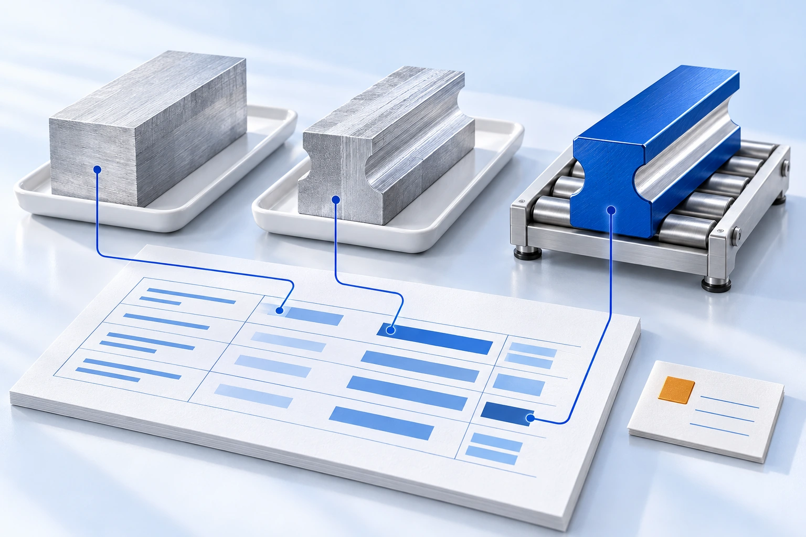
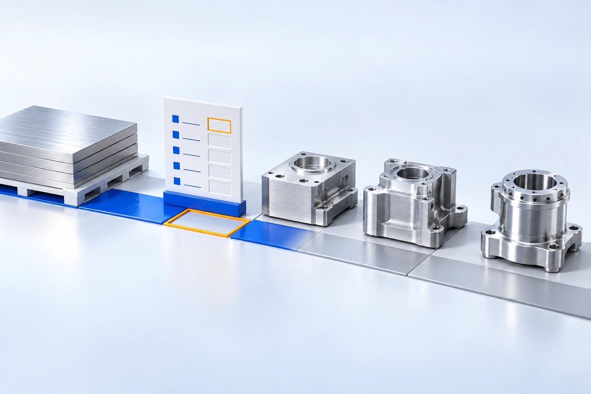
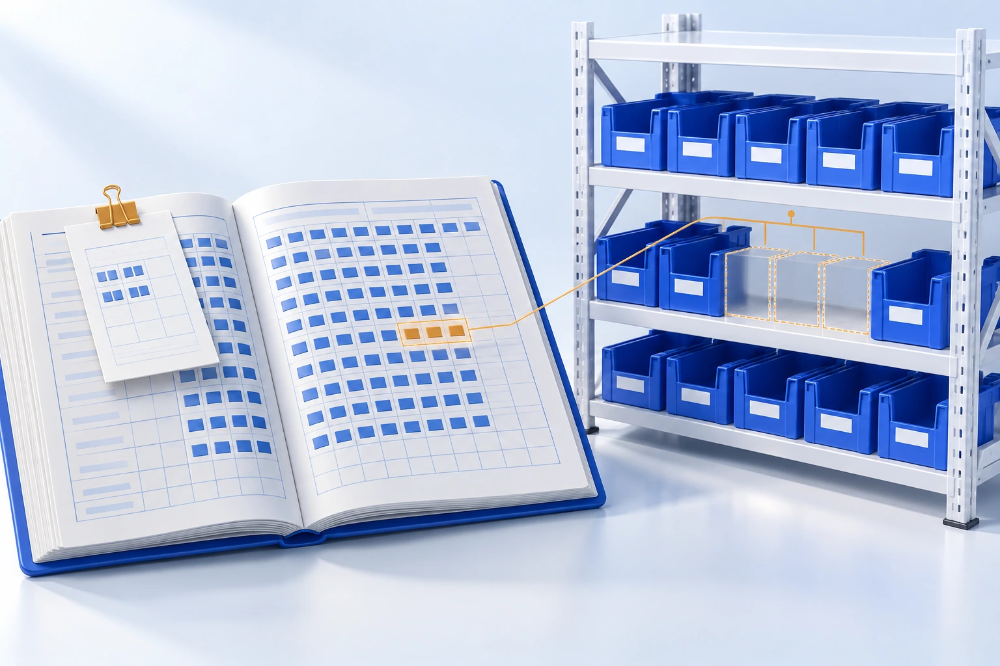

同一物料，多套编号
采购、生产、财务对不上

IPO 数据服务 面向拟上市制造企业与券商项目组
把采购、生产、库存与财务记录，整理成可核对、可重算、可追溯的数据依据。
采购、生产、财务对不上

投入与产出缺少核对依据

多级加工的成本接不下去

历史单据与库存需重新梳理
三项服务可单独选择，也可衔接使用。
比对业务与财务记录，定位差异、评估影响，明确整改范围。
问题清单 · 具体定位 · 整改建议
梳理编号、配方与单据，从原料到产成品，先核数量，再逐层算成本。
调整台账 · 来源说明 · 可重跑规则
围绕毛利变化等具体问题，追查来源单据，整理计算过程与数据底稿。
数据表 · 计算过程 · 来源依据
百万行记录，难在追因，更难在反复验证。
跨年度、多层加工的矛盾相互牵连；让 AI 持续追查，让程序批量验证。
关联单据，提出候选规则
检查数量、成本与约束
核对关键事实与计价依据
判断不成立，就修正规则、重新验证；确认后重算并留痕。
保留前后数值与依据，未解释差额单列
口径变化后，支持按同一规则重新计算
数据留在企业内网，无需更换现有系统
以上为单个已交付项目数据，
不代表所有项目效果。
传神智溯 · IPO 数据体检 / 数据治理 / 问询数据响应